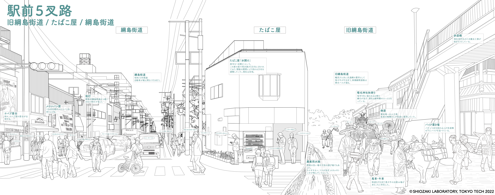

菊名駅東口エリアは再開発が計画されている。地形的な制約のある狭い範囲に綱島街道と鉄道が集中した交通環境に課題が多い地域であるため、再開発は課題解消となる一方で、戦前からの商店街の賑わいを支えてきた街区や建物が失われるということでもある。地元への愛着は自分自身の生活の歴史や、昔の人びとの生活の気配によるものではないか。生活は無意識のうちに土地と結びついているため、菊名への愛着や、現在のコミュニティは再開発によって失われてしまう可能性がある。私たちは菊名の生活や特徴をアーカイブとして残すことで、菊名に対する住民の愛着をこれからも持続させることを期待している。私たちは現在の菊名と、菊名の歴史をアーカイブにした。現在の菊名の調査として、菊名と類似した特徴を持ち、その長所を商店街の取り組みによって伸ばしたり、短所を解消したりしている他の郊外駅をまとめ、菊名と比較することで菊名の特徴や地域で考えるべき課題が明らかにした。また、歴史のリサーチとして、文献と現地の調査から様々な生活を取り出し、それを様々な時系列が混在した「異時同図」としてまとめることで、菊名の土地に結びついた人びとの生活・文化を明らかにした。さらに菊名での個人の人生を年表化した「営み年表」をつくることを通して、一般的な年表とは異なる、菊名の変遷を身近に感じられるようにした。これらのリサーチを再開発業者である東急電鉄、地元の人びとで結成された「菊名駅東口地区まちづくり協議会」に対しての発表を行った。この会を通じて、住民の菊名への思いを直接聞くことができ、再開発される郊外都市について深く考える機会となった。